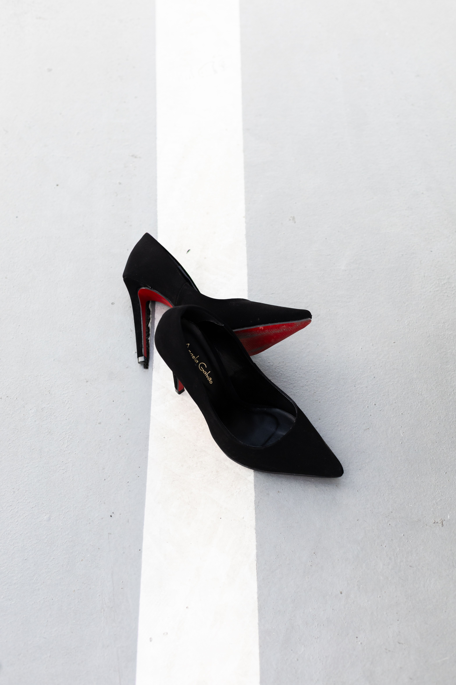

WOMEN'S CLOTHING
Customers can choose from a variety of stylish clothes in the women's clothing selection that are appropriate for various situations and personal styles. The company uses social media to advertise its available items.
Bethel Fashion provides a range of apparel, accessories, and shoes for ladies. The company advertises its products on social media and offers stylish, reasonably priced goods to consumers.
Customers can choose from a variety of stylish clothes in the women's clothing selection that are appropriate for various situations and personal styles. The company uses social media to advertise its available items.
In addition to clothing, Bethel Fashion also sells shoes. For details on available goods, costs, and inventory, clients can get in touch with the company.

Bethel Fashion offers a variety of fashion accessories. These goods add to a comprehensive fashion style and go well with the apparel and shoes that consumers can purchase.
Bethel Fashion's social media communication platforms allow customers to examine promoted products and get details about orders, prices, and available stock.